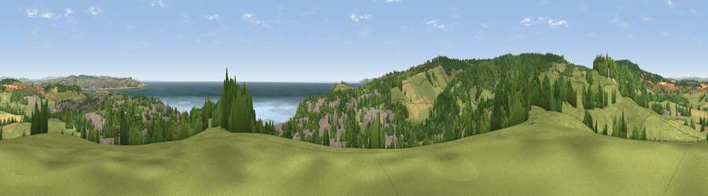

Viewpoint near Dawlish
#2635 in England · top 6% of its area beats it · near Dawlish · footpathWhere it is
The exact computed spot (SX 95625 77250). Click the marker for map links.
Public access: a public right of way passes within 15 m of this spot. Computed from Natural England's CRoW access layer and OpenStreetMap rights of way — not the legal definitive map. Always verify locally.
The view, rendered

A 360° render of this exact spot computed from the terrain model, tree cover and land cover — summer colours, afternoon light, calibrated against photographs of famous viewpoints. Real trees, hedges and buildings will differ in detail.
The panorama
Grey silhouette: terrain skyline in each direction (720 bearings, Earth curvature and refraction included). Dashed green: skyline with trees (+15 m) and buildings (+8 m) as obstacles. Blue strip: how far the ground is visible on each bearing.
Where the view opens
Wedge length = distance to the farthest visible ground on that bearing (vegetation-aware). Rings at 10, 25 and 50 km.
What fills the view
43% grassland · 26% woodland · 15% water · 11% built-up · 4% cropland
Angular shares of the visible panorama (visual magnitude), not map area. Landscape diversity 0.60 (0–1 Shannon).
Key numbers
More beautiful places nearby
The staircase of upgrades: each row has a higher view potential than everything closer. Driving times are estimates from straight-line distance, calibrated against real road routing — check an actual route before setting out.
| Place | Direction | Drive | Score |
|---|---|---|---|
| Viewpoint near Luton | WNW · 3 km | ~7 min | 81.0 |
| Viewpoint near Holcombe | SW · 3 km | ~7 min | 83.3 |
| Viewpoint near Shaldon | SSW · 7 km | ~14 min | 83.8 |
| Viewpoint near Stokeinteignhead | SSW · 8 km | ~16 min | 84.1 |
| High Peak | ENE · 17 km | ~30 min | 85.3 |
| Golden Cap | ENE · 47 km | ~68 min | 88.7 |
| The Knoll | E · 59 km | ~81 min | 91.0 |
50.58562, -3.47572 · source: screening · position refined by local search. Computed location — check access rights before visiting.